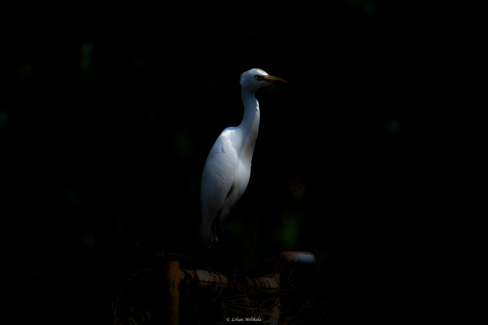

Lehan P. D. Welikala
Finance Executive | Data Science & Accounting
Motivated individual with experience in financial management, accounting, and data analytics. Excellent communicator, coder, and problem-solver with keen attention to detail.
ACCA
Strategic Professional Level
About Me
I hold a Degree in Data Science and currently an ACCA Professional Level candidate. This unique blend of analytical and financial expertise enables me to approach problems with both quantitative precision and business acumen.
As a former Finance Executive at VFS Global, I have practical experience in multinational financial management, reconciliations, and SAP-driven reporting.
Education
GCE O/L
2007 - 2017
St. Peter's College, Colombo
Edexcel Advanced Level
2018 - 2020
St. Peter's College • A* in Accounting
Dip. Accounting & Finance
2021 - 2023
Concordia International University
BSc Data Science
2021 - 2025
Coventry University UK
Professional Experience
Finance Executive
VFS Global (Pvt) Ltd – Colombo, Sri Lanka
- Managed financial reconciliations and month end reporting.
- Utilized SAP and Advanced Excel for analysis and reporting.
- Payment processing.
- Collaborated across teams for data accuracy and compliance.
BSc Data Science Insights
-
•
Statistical Modelling
Regression & Trend Forecasting
-
•
Machine Learning
Risk & Fraud Analysis
-
•
Visualization
Actionable Business Intelligence
Projects
CSE Portfolio Tracker
Built a Python-based tool to track Colombo Stock Exchange investments. Fetches real-time data, calculates ROI, and visualizes portfolio performance.
Expense Tracker Web App
Full-stack app to log and categorize expenses, view monthly spending charts, and identify savings opportunities. Built with Flask and Chart.js.
St. Mary's Church Website
Designed and developed a responsive website for the church's media unit, featuring event calendar, photo gallery, and contact form.
Through the Lens
Beyond financial modeling and data architecture, I explore the world through photography. Capturing moments helps me maintain a creative perspective and a sharp eye for detail. Here are a few of my favorite shots.



Professional Toolkit
Finance & Accounting
Data & Analytics
Soft Skills
Tools
Achievements & Extracurricular
Member of English Literary and Drama Society at St. Peter's College
President of Media Unit at St. Mary's Church, Dehiwala
Member of Student's Council at NIBM